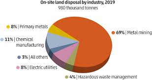

Global Affected Areas: The Food and Agriculture Organization (FAO) estimates that approximately 2 billion hectares of land worldwide are degraded, with soil pollution being a significant contributing factor.
Heavy Metal Contamination: Over 10 million hectares of farmland in China are polluted with heavy metals, including cadmium, lead, and arsenic, affecting food safety.
Industrial Waste Contribution: The World Bank reports that industrial activities generate about 400 million tons of hazardous waste annually, much of which contaminates soil.
Agricultural Chemicals: About 2.5 million tons of pesticides are used annually worldwide, with residues often leaching into the soil, reducing its fertility and harming microorganisms.
Plastic Pollution: Microplastics in agricultural soils exceed marine microplastic pollution levels by 4 to 23 times, according to the FAO.
Loss of Arable Land: Each year, an estimated 24 billion tons of fertile soil are lost due to erosion and pollution, threatening global food security.
